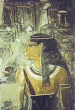

Маат ("страусине перо"), в єгипетській міфології богиня істини, правосуддя і гармонії, дочка бога сонця Ра, учасниця створення світу, коли був знищений хаос і відновлений порядок. Вона грала помітну роль в потойбічному суді Осіріса. Центр культу Маат перебував в фіванський некрополь.
Оскільки древні єгиптяни вірили, що кожен померлий мав постати перед 42 суддями і визнати себе невинним або винним у злочинах, душа померлого зважувалася на шальках терезів, врівноважених страусячим пером богині. Ваги тримав Анубіс, бог з головою шакала, а вирок виносив чоловік Маат, бог Тот. Якщо серце було зморені злочинами, чудовисько Амту, лев з головою крокодила, пожирало померлого. Якщо покійний прожив життя "з Маат в серці", був чистий і безгрішний, то оживав для щасливого життя на полях раю, иару. Маат зазвичай зображували з пером в зачісці, яке на суді вона покладала на чашу ваг. Вважалося, що люди живуть "завдяки Маат, в Маат і для Маат".